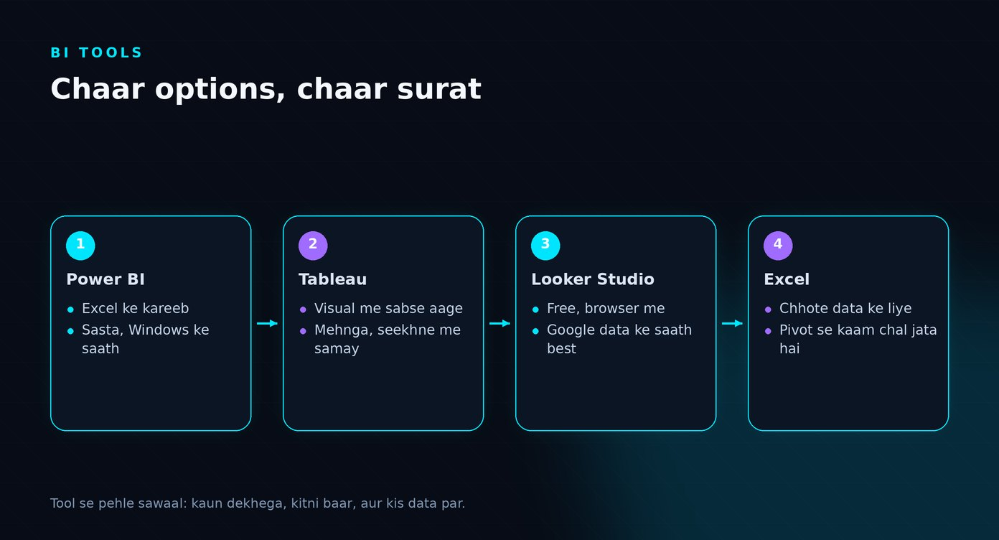
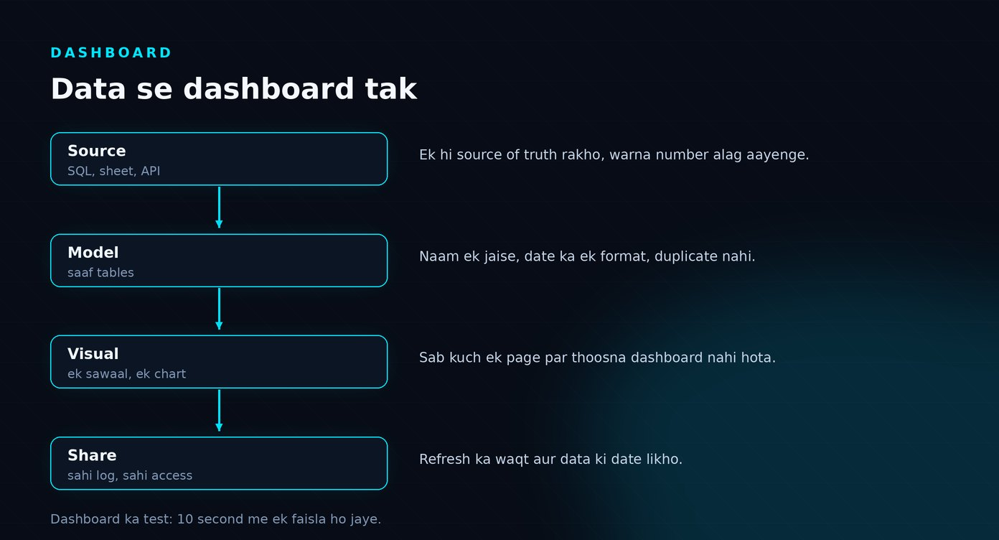

Power BI vs Tableau vs Looker Studio: Kaunsa BI Tool Lein
जब team में यह सवाल आता है कि "हमें dashboard चाहिए", तो अगला सवाल होता है — किस tool में बनाएँ। Power BI, Tableau और Looker Studio तीनों अच्छे हैं, पर तीनों एक जैसे नहीं हैं। गलत चुनाव का मतलब है या तो बहुत ज़्यादा खर्च, या ऐसा tool जिसे team इस्तेमाल ही नहीं करती।
इस guide में मैं तीनों की तुलना उन चीज़ों पर करूँगा जो असल में फर्क लाती हैं — खर्च, सीखने का समय, data source, sharing और offline काम। साथ में बताऊँगा कि किस स्थिति में कौन सा सही है, dashboard बनाने का छह कदम का तरीका, और वे पाँच गलतियाँ जो अच्छे tool को भी बेकार बना देती हैं।
छोटा जवाब: अगर आप Microsoft 365 और Excel में पहले से काम करते हैं, तो Power BI सबसे सस्ता और आसान रास्ता है। अगर visualization की गहराई और बड़े data पर डिज़ाइन सबसे ज़रूरी है, तो Tableau. अगर बजट लगभग शून्य है, data Google के tools (Sheets, Analytics, BigQuery) में है, और dashboard share करना है, तो Looker Studio. शुरुआत में एक ही tool चुनें और उसे अच्छे से सीखें — एक सवाल, एक dashboard, एक source. नया tool जोड़ने से पहले पुराने वाले से पूरा फायदा लें।
BI tool karta kya hai
BI tool वह जगह है जहाँ data से जवाब बनते हैं। वह चार काम करता है: अलग-अलग sources से data लाता है, उसे एक model में जोड़ता है, visuals बनाता है, और उन्हें team तक पहुँचाता है — अक्सर तय समय पर अपने आप refresh करते हुए।
इसीलिए BI tool सिर्फ़ "chart बनाने की app" नहीं है। उसका असली काम है एक ऐसा number बनाना जिस पर सब सहमत हों। जब sales, finance और operations तीनों एक ही dashboard देखते हैं, तो बैठकों में "मेरे number अलग हैं" वाली बहस कम हो जाती है।
teen options, ek nazar me

Power BI
Microsoft का tool, और इसका सबसे बड़ा फायदा यह है कि यह Excel और Microsoft 365 के साथ सीधे जुड़ता है। डेस्कटॉप app में report बनती है, और service पर उसे publish करके team के साथ share किया जाता है। DAX नाम की formula language सीखनी पड़ती है, पर basic reports के लिए ज़रूरत कम पड़ती है।
छोटी और मझोली teams के लिए यह अक्सर सबसे व्यावहारिक चुनाव है, क्योंकि license अक्सर पहले से मौजूद Microsoft plan में शामिल होता है और users इसे Excel जैसा ही समझते हैं।
Tableau
Tableau visualization में सबसे आगे माना जाता है — खासकर जब data बहुत बड़ा हो और exploration करना हो। drag-and-drop में चार्ट बनाना और उन्हें जोड़कर कहानी बनाना इसकी ताकत है।
कीमत इसकी सबसे बड़ी कमज़ोरी है, और enterprise setup में खर्च तेज़ी से बढ़ता है। साथ में यह भी मानना पड़ेगा कि team को सीखने में समय लगेगा — एक-दो दिन में कोई expert नहीं बनता।
Looker Studio
Google का free tool, जो browser में चलता है। इसका सबसे बड़ा फायदा शून्य कीमत और आसान sharing है — एक link, और dashboard किसी को भी दिख सकता है। Google Sheets, Analytics, Ads और BigQuery के साथ यह सबसे सहज है।
सीमाएँ भी साफ़ हैं: बहुत बड़े data पर performance गिरती है, complex modeling कम है, और advanced interactivity सीमित है। छोटे-मझोले reporting के लिए यह काफ़ी है; बड़े enterprise warehouse के लिए अक्सर नहीं।
Looker Studio ki hadd
Looker Studio की सबसे बड़ी सीमा performance है। जब data लाखों rows का हो और कई charts एक page पर हों, तो load समय बढ़ने लगता है। इसका इलाज यह है कि data को पहले BigQuery या किसी warehouse में summary कर लें, और tool में सिर्फ़ तैयार table भेजें।
दूसरी सीमा modeling की है — complex calculations और row-level security सीमित हैं। तीसरी यह कि यह Google के बाहर के sources के साथ भी चलता है, पर हर जगह उतना अच्छा नहीं। जब ज़रूरत बढ़े, तो यही team किसी बड़े tool पर जाती है — इसलिए शुरुआत में Looker Studio चुनना गलती नहीं, बस उसकी हद पता होनी चाहिए।
tulna, ek table me
| पहलू | Power BI | Tableau | Looker Studio |
|---|---|---|---|
| खर्च | मध्यम, M365 में अक्सर शामिल | सबसे महंगा | Free |
| सीखने का समय | 1–2 हफ़्ते | 2–4 हफ़्ते | 2–3 दिन |
| Data sources | बहुत, Microsoft के साथ सबसे अच्छा | बहुत, हर जगह मज़बूत | Google ecosystem |
| Visualization | अच्छा | सबसे बेहतर | सीमित पर काफ़ी |
| बड़ा data | अच्छा (model पर निर्भर) | बहुत अच्छा | सीमित |
| Sharing | License के हिसाब से | License के हिसाब से | Link से आसान |
| किसके लिए | छोटी-मझोली team | Data team, बड़ा setup | शुरुआत, marketing |
Data model: dashboard ki neev
Tool चुनने के बाद असली काम data model का है, और यहीं ज़्यादातर dashboards बिगड़ते हैं। तीन बातें याद रखें।
1. एक तथ्य table, कई dimension tables। Sales का हर record एक fact है — कितना, कब, किसने। Customer, product और city dimension हैं। जब model इस तरह बना हो, तो हर chart के लिए नई query लिखनी नहीं पड़ती।
2. नाप और पहचान अलग रखें। Amount, quantity और count measures हैं — इन्हें जोड़ा जाता है। Customer, product और month dimensions हैं — इन पर filter और grouping होती है। जब दोनों मिल जाएँ, तो total गलत आते हैं और समझ नहीं आता क्यों।
3. रिश्ते एक जैसे रखें। एक customer के कई orders हो सकते हैं, पर एक order का एक ही customer. अगर model में रिश्ता उल्टा या दोनों तरफ़ से many हो, तो numbers दुगने हो सकते हैं — और यह गलती दिखती नहीं, सिर्फ़ total में छिप जाती है।
Dashboard banane ka chhah kadam

1. सवाल तय करें। "एक dashboard जिसमें सब कुछ हो" सवाल नहीं है। सवाल यह है: "कौन सा फैसला इस dashboard से होगा, और कितनी देर में?" एक अच्छा dashboard 10 सेकंड में एक जवाब देता है।
2. Source तय करें। एक ही source of truth रखें। अगर sales का data दो जगह है, तो पहले तय करें कौन सा सही है — वरना dashboard दो अलग कहानियाँ सुनाएगा।
3. Model साफ़ करें। Column के नाम एक जैसे, date का एक format, duplicates हटाए हुए, और हर metric की परिभाषा लिखी हुई। यह कदम सबसे ज़्यादा समय बचाता है।
4. Visual चुनें। Comparison के लिए bar, trend के लिए line, हिस्सेदारी के लिए pie (कम इस्तेमाल करें), और एक number दिखाने के लिए बड़ा KPI card. एक chart, एक बात।
5. Share करें। सही लोगों को सही access दें, refresh का समय लिखें, और data किस तारीख़ तक का है यह dashboard पर ही दिखाएँ।
6. Review करें। महीने में एक बार देखें — कौन से charts कभी नहीं खोले गए? उन्हें हटा दें। Dashboard भी साफ़ रहता है या नहीं, यह देखना पड़ता है।
Chhote team ke liye 30 din ka plan
हफ़्ता 1 — सवाल और source। तीन सवाल लिखें जो हर हफ़्ते पूछे जाते हैं, और तय करें कि data कहाँ से आएगा। इसी हफ़्ते तय करें कि कौन सा number "सही" माना जाएगा।
हफ़्ता 2 — model। एक fact table और तीन-चार dimensions बनाएँ। नाम एक जैसे रखें, dates का एक format, और हर measure की परिभाषा लिखें।
हफ़्ता 3 — पहला dashboard। तीन charts से ज़्यादा न बनाएँ: एक trend, एक comparison और एक KPI. इसे 2–3 लोगों को दिखाकर पूछें कि क्या वे इसे 10 सेकंड में समझ पाते हैं।
हफ़्ता 4 — sharing और refresh। Access तय करें, refresh का समय सेट करें, और dashboard पर data की तारीख़ दिखाएँ। अंत में एक छोटा document लिखें — कौन सा metric कैसे बनता है।
एक और आदत जो 30 दिन के बाद काम आती है — महीने में एक बार dashboard का review. तीन सवाल पूछें: कौन से charts कभी नहीं खोले गए, कौन सा filter सबसे ज़्यादा इस्तेमाल हुआ, और कौन सा number पर किसी ने सवाल उठाया। पहले दो से आप हटाने का फैसला करते हैं, तीसरे से परिभाषा साफ़ करते हैं। यह छोटा review dashboard को ज़िंदा रखता है।
Kharch ka hisaab
License के अलावा तीन खर्च अक्सर छूट जाते हैं। पहला — refresh और gateway: अगर data अंदर के network में है, तो उसे बाहर लाने के लिए अलग setup चाहिए। दूसरा — storage: बहुत बड़े data को tool के अंदर रखने पर अलग शुल्क लग सकता है। तीसरा — समय: किसी को report बनाने और सँभालने में हफ़्ते में कुछ घंटे लगेंगे, और वह समय किसी के काम से निकलेगा।
इसीलिए छोटी team के लिए सबसे सस्ता रास्ता अक्सर यह होता है — जो tool पहले से license में है, उसी से शुरू करें, और जब ज़रूरत साफ़ दिखे तब upgrade करें।
paanch galtiyan
1. Tool पहले, सवाल बाद में। Tool चुनने में हफ़्ते लगाना और यह न सोचना कि कौन सा फैसला होगा — सबसे आम गलती।
2. हर चीज़ एक page पर। 20 charts वाला dashboard किसी काम का नहीं। तीन charts जो रोज़ देखे जाएँ, बेहतर हैं।
3. Metric की परिभाषा न लिखना। "Active user" का मतलब हर team के लिए अलग निकलता है। परिभाषा dashboard पर ही लिखें।
4. Refresh का समय न बताना। जब कोई पुराना number देखकर फैसला ले ले, तब पता चलता है कि data कल का था।
5. Access खुला छोड़ देना। जिसे ज़रूरत नहीं, उसे edit access न दें। एक गलत filter पूरे dashboard का भरोसा तोड़ देता है।
Dashboard बनाने से पहले data साफ़ होना ज़रूरी है — data cleaning वाली guide उसी पर है। और अगर आप SQL से data निकालना सीखना चाहते हैं, तो SQL guide से शुरुआत करें।
Mera anubhav
मैंने एक बार एक छोटी company के लिए Tableau चुना, क्योंकि वह "best tool" था। छह महीने बाद पता चला कि team में सिर्फ़ दो लोग उसे खोलते हैं — बाकी लोग वही numbers Excel में निकालते रहे। समस्या tool की नहीं, adoption की थी। उसी company में बाद में Power BI आया और उपयोग तीन गुना हो गया, क्योंकि लोग उसे Excel जैसा समझते थे।
दूसरी बात जो मैंने सीखी: dashboard का सबसे कीमती हिस्सा वह line है जो बताती है कि number कैसे बना। जब किसी को शक हो, वह उसी line को पढ़कर भरोसा कर लेता है। बिना परिभाषा वाला dashboard हर महीने फिर से बहस पैदा करता है।
तीसरी बात: शुरुआत में एक ही tool पर रहें। दो tools का मतलब दो तरह के numbers और दुगुना maintenance. जब कोई ठोस वजह आए — जैसे बहुत बड़ा data या बहुत खास visualization — तब बदलें।
नतीजा
Power BI, Tableau और Looker Studio में कोई "सबसे अच्छा" नहीं है; सबसे अच्छा वह है जिसे आपकी team सच में इस्तेमाल करेगी। Microsoft के माहौल में Power BI, गहरे visualization और बड़े data में Tableau, और शून्य बजट व Google data में Looker Studio. किसी भी tool में सफलता पहले तीन कदमों से आती है — सवाल, source और साफ़ model. एक आख़िरी बात: tool बदलना आसान है, भरोसा बदलना मुश्किल। जब team को एक dashboard पर भरोसा हो जाए, तो उसे बिना ठोस कारण के मत बदलिए — नया tool पुराने numbers को गलत साबित नहीं करता, सिर्फ़ नई मेहनत जोड़ता है।
अक्सर पूछे जाने वाले सवाल
क्या Looker Studio बड़ी company के लिए ठीक है?
मझोले reporting के लिए हाँ। बहुत बड़े data और complex model के लिए performance सीमा बन जाती है — तब warehouse के साथ दूसरा tool बेहतर रहता है।
क्या Power BI सीखना मुश्किल है?
Basic reports एक-दो हफ़्ते में आ जाती हैं। DAX गहरा है, पर शुरुआत में उसकी ज़रूरत कम पड़ती है।
क्या Excel काफ़ी नहीं है?
अगर data छोटा है और users कम, तो Excel या pivot table काफ़ी है। BI tool तब लें जब refresh अपने आप चाहिए और कई लोगों को एक ही number दिखाना हो।
क्या dashboard बनाने के लिए SQL आनी चाहिए?
ज़रूरी नहीं, पर बहुत मदद करती है। SQL से आप data को सही shape में ला सकते हैं और tool में कम काम करना पड़ता है।
कितने dashboard ठीक हैं?
जितने असल में देखे जाएँ। शुरुआत में एक या दो बनाएँ, उन्हें अच्छे से बनाएँ, और उपयोग देखकर आगे बढ़ें।